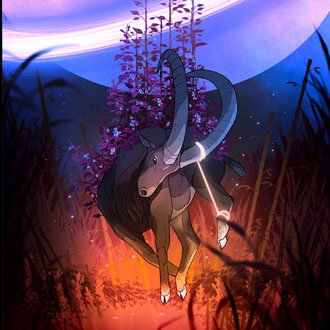

-
Áries
21/03 a 19/04
Regidos pelo planeta de marte, arianos vivem no agora e fundamentam a vida na existência, ação e decisão. Líderes natos, são ótimos empreendedores. São espontâneos, corajosos e enérgicos.
-
Touro

20/04 a 20/05
Regidos pelo planeta vênus, taurinos são persistentes, sensuais e teimosos. Vivem pelo conforto e bem-estar, mas podem atingir níveis de possessividade. Prezando pela beleza e gula, sua satisfação exige contato com todos os cinco sentidos.
-
Gêmeos
21/05 a 21/06
Geminianos são regidos pelo planeta mercúrio, tendo como pontos fortes sua curiosidade, inteligência e necessidade de liberdade. Apreciadores de novas ideias, gostam de sair da rotina, sendo considerados o signo mais inteligente do zodíaco, eis que possuem alta agilidade mental.
-
Câncer
22/06 a 22/07
Cancerianos são sensíveis, carinhosos e prezam pelo núcleo familiar. Regidos pela lua, os sentimentos sempre estão à flor da pele e buscam o que lhes traz segurança. Câncer costuma ter intuição acentuada, mas também se caracterizam pelo senso maternal e emotivo.
-
Leão
23/07 a 22/08
Leoninos acreditam ser o centro das atenções, amam plateias, aplausos e constantemente são autoritários e orgulhosos. Regidos pelo sol, são criativos e possuem autoestima elevada. Geralmente são corajosos, mas oportunistas.
-
Virgem
23/08 a 22/09
Objetivos, humanos e organizados, virginianos são regidos por mercúrio, possuindo visão crítica e opinativa da vida. Buscam a perfeição e costumam identificar detalhes que ninguém mais percebe. Apesar de prezarem pela praticidade, também podem ser muito frios e calculistas.
-
Libra
23/09 a 22/10
Regidos pelo planeta vênus, librianos buscam o equilíbrio, sendo altamente éticos, vaidosos, empáticos e diplomáticos, sendo muitas vezes racionais, apesar de idealizar demais suas expectativas.
-
Escorpião
23/10 a 21/11
Escorpianos são intensos, misteriosos e intuitivos. Regidos por marte e plutão, costumam ser perspicazes e inclinados à capacidade natural de possuir um sexto sentido. Possuem uma força transformadora, apesar de ciumentos.
-
Sagitário
22/11 a 21/12
Regido por júpiter, o sagitariano é ativo. Otimista, viaja na própria mente ou no mundo inteiro, não aceitando limites ou rotinas. É exagerado, jovial e preza pelo movimento. Quanto mais, melhor!
-
Capricórnio
22/12 a 19/01
Responsabilidade, ambição e persistência representam o capricorniano, que é regido por saturno. Com propósitos e metas definidos, Capricórnio possui foco e paciência com suas metas, sendo maduro, bem humorado e sempre busca seguir as regras do jogo, mesmo que pessimista.
-
Aquário
20/01 a 18/02
Regido por saturno e urano, aquarianos buscam a inovação, originalidade e independência. Com apreço à quebrar regras e paradigmas, costumam ter altas conexões com a liberdade. Idealistas e racionais, Aquário é humano, mas também podem ser radicais e "do contra".
-
Peixes
19/02 a 20/03
Solidariedade, intuição e desapego representam o pisciano, que é regido pelos planetas júpiter e netuno. Com uma sensibilidade superior ao comum, são compassivos e inspiradores, tendendo a ter fortes conexões com a espiritualidade. Porém, também possuem um oceano de sentimentos, o que os leva ao extremo de um mundo de imaginações.